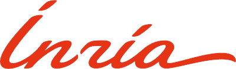

QCOMICAL School 2025
on Quantum and Classical Programming Languages and Semantics
The first QCOMICAL School will take place in Nancy, France, in 2025 as part of the QCOMICAL project. The school will offer tutorials and lectures by leading researchers involved in the project, working on quantum computing as well as related topics in programming languages and semantics, fostering interaction across foundational approaches.
November 3 to 7, 2025 – Nancy, France
Courses and Lecturers
Course titles are tentative and indicate the general subject areas to be covered.
- Tutorial: Introduction to Quantum Computing — Simon Perdrix (Inria/LORIA)
- Tutorial: Introduction to ZX Calculus — Miriam Backens (Inria/LORIA)
- Quantum Programming Languages — Benoît Valiron (CentraleSupélec)
- Quantum Linear Optics — Timothée Goubault de Brugière (Quandela)
- Realisability — Emmanuel Beffara (Université de Grenoble)
- Concurrency – Michele Pinna (Università degli Studi di Cagliari)
- Quantitative Types — Pablo Barenbaum (UNQ (CONICET) & UBA)
Schedule
Below is the preliminary schedule scheme:
| Time | Monday | Tuesday | Wednesday | Thursday | Friday |
|---|---|---|---|---|---|
| 9:30 – 11:30 | Quantum Programming Languages | Concurrency | Quantum Linear Optics | Quantitative Types | |
| 11:30 – 12:00 | Coffee break | ||||
| 12:00 – 13:00 | Realisability | Quantum Programming Languages | Quantitative Types | Industrial Session | |
| 13:00 – 13:30 | Lunch break | ||||
| 13:30 – 14:30 | Tutorial: Introduction to Quantum Computing | ||||
| 14:30 – 15:30 | Realisability | Quantum Programming Languages | Quantitative Types | Quantum Linear Optics | |
| 15:30 – 16:00 | Coffee break | ||||
| 16:00 – 16:30 | Tutorial: Introduction to ZX Calculus | Concurrency | Realisability | Quantum Programming Languages | |
| 16:30 – 18:00 | |||||
Pre-Registration
Registration is now open and participation is free of charge.
Filling the form below is mandatory.
👉 Click here to access the registration formYour submission will be considered a pre-registration until you receive a confirmation email.
If the number of registrations exceeds the available capacity, places will be allocated on a first-come, first-served basis, and a waiting list will be created. You will be notified of your registration status by email.
Venue
The school will take place at LORIA (Lorraine Research Laboratory in Computer Science and its Applications), located on the campus of Université de Lorraine in Nancy, France.
Address:
Bâtiment Ada Lovelace615 rue du Jardin Botanique
54600 Villers-lès-Nancy, France
The campus is easily accessible by tram (Line T3, stop "Grande Corvée", or Line T1, stop "Vélodrome - Callot"), and about 15 minutes from the city centre of Nancy.
Further details on how to reach LORIA can be found on the official directions page.
Visa Information
Participants from outside the European Union may need a visa to enter France. You can check the requirements according to your country of residence on the official France Visas website.
If you require an official invitation letter to support your visa application, please contact the organisers after completing your pre-registration.
Organisers
- Kostia Chardonnet - Inria/LORIA
- Alejandro Díaz-Caro (Chair) - Inria/LORIA & UNQ - Contact
- Simon Perdrix - Inria/LORIA
- Benoît Valiron - CentraleSupélec
Hosted by the Centre Inria de l'Université de Lorraine
MSCA Staff Exchanges — Funded by the European Commission through Marie Skłodowska-Curie Actions – Staff Exchanges